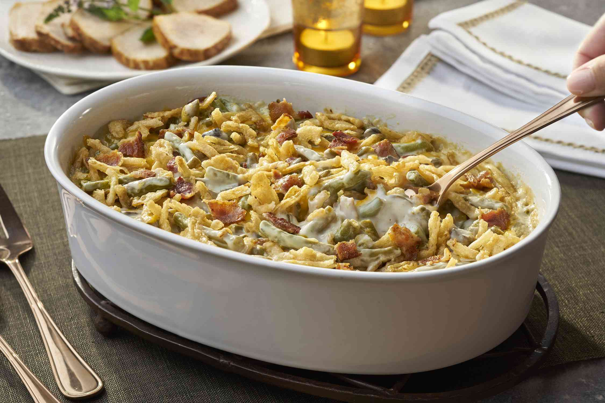

Bacon & Cheddar Green Bean Casserole Recipe

Description
This green bean casserole with bacon and Cheddar is proof that everything's better with bacon and cheese! Make your favorite green bean casserole more delicious just by adding these two ingredients. This recipe is the perfect addition to your Thanksgiving or Christmas holiday feast, but it's also a nice comfort-food casserole that works alongside any weeknight dinner.
Ingredients
- 4 (14.5 ounce) cans Del Monte® Green Beans, any style, drained
- 2 (10.5 ounce) cans Campbell's® Condensed Cream of Mushroom Soup
- 2 ⅔ cups French's® French Fried Onions, divided
- 1 cup milk
- ½ cup shredded Cheddar cheese, divided
- 6 slices cooked bacon, divided
- ¼ teaspoon ground black pepper
Steps
- Preheat the oven to 350 degrees F (175 degrees C).
- Combine green beans, condensed soup, milk, and pepper in a large bowl. Add 1 1/3 cups French-fried onions and 1/2 of the Cheddar cheese.
- Crumble 5 slices of bacon; add to the green bean mixture and mix until well combined. Transfer to a 3-quart baking dish.
- Bake in the preheated oven for until hot and bubbly, about 25 minutes.
- Remove from the oven and stir. Sprinkle with the remaining Cheddar and onions. Crumble remaining slice of bacon over top.
- Return to the oven and bake until onions are golden brown, about 5 more minutes.